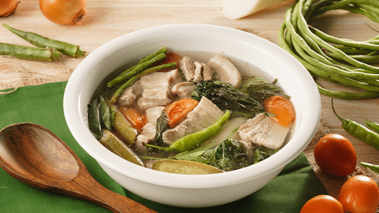

Sinigang Recipe

Description
Sinigang is a popular Filipino sour soup known for its tangy and savory flavors. It's typically made with a variety of vegetables and meat, creating a hearty and satisfying dish.
Ingredients
- 1 lb pork shoulder, cut into chunks
- 2 cups water
- 1 cup tamarind soup
- 1 cup vegetables (e.g., okra, eggplant, tomatoes)
- 1 tsp garlic, minced
- 1 tsp onion, minced
- Salt and pepper to taste
Steps
- Heat a large pot over medium heat and add the pork shoulder.
- Cook until the pork is browned on all sides.
- Add the water and tamarind soup to the pot.
- Bring the mixture to a boil, then reduce the heat to low and let it simmer for about 1 hour or until the pork is tender.
- Add the vegetables, garlic, and onion to the pot.
- Cook for another 10-15 minutes until the vegetables are tender.
- Season with salt and pepper to taste.
- Serve hot with steamed rice.
Back to Main Page